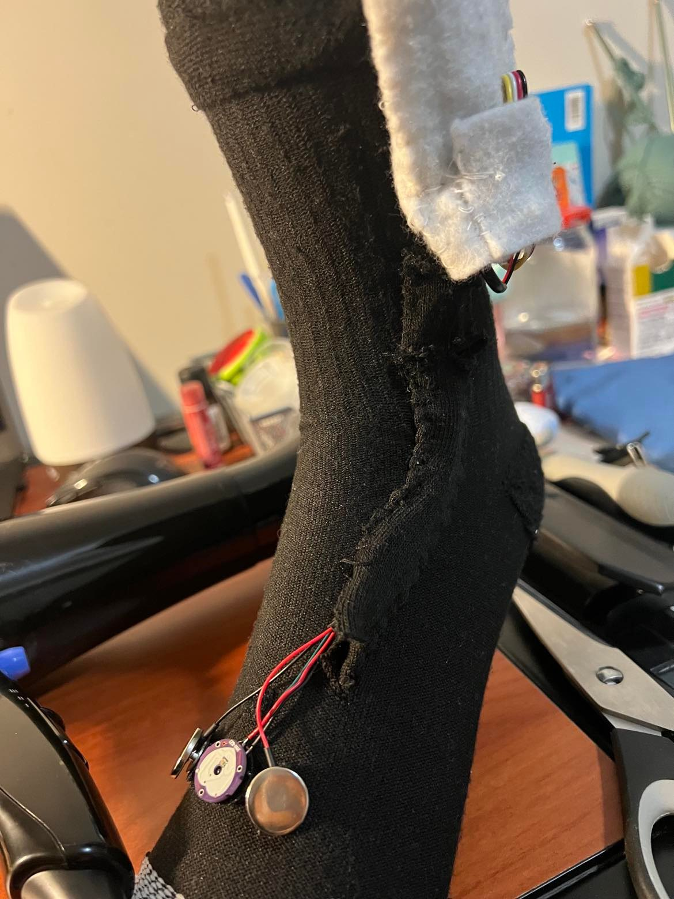
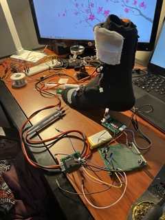
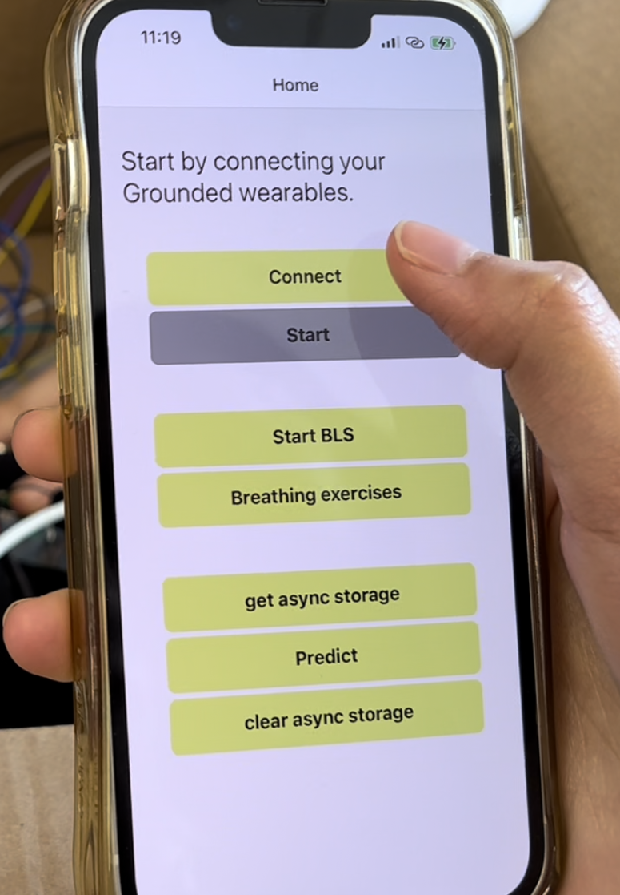

Mechanical
The design was modified for more comfort and a minimal feel and
reassembled. The design was reversed so that the sensors sit
inside the design in the same location as before and for comfort
the circuit board position is moved near the battery which would
be removable using Velcro. Everything sits inside the design, all
electrical components were sewed and fixed into our design so
outside, our solution is completely discreet.

Electrical
Assembled the PCB and tested the full circuit. Lots of
troubleshooting to get the usb bridge working so we can upload
code to the esp32 module. Continuing to troubleshoot issues with
incorrect sensor values.

Software
Implemented the BLS code which turns on the vibration actuators on
the two wearables in an alternating fashion. Finished the main
functionality for the app so it polls the sensors, sends data to
the API and returns/displays the predicted stress level. The app
also now prompts the user to choose a grounding technique if they
are stressed and the user can manually start the BLS system. More
data was collected and the model was re-trained, also the data
processing was moved to happen on the API side so that only the
analog values need to be polled from the sensors.
